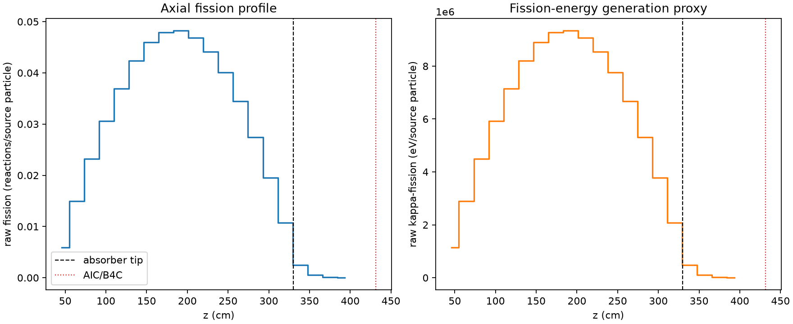
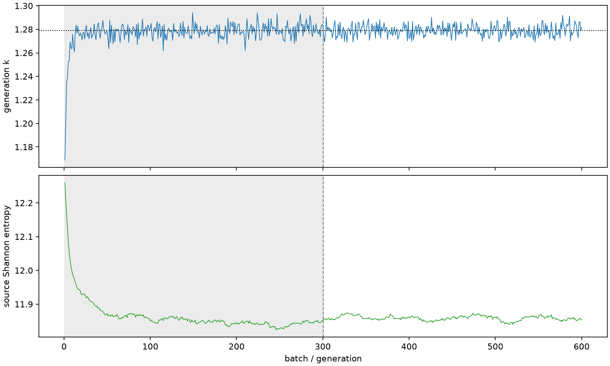

| field | value |
|---|---|
| experiment | V2-STAGE_256_OGRENCI_04-0027 |
| k | 1.2789960914112752 |
| MC standard error | 0.0001695966252955306 |
| seconds | 988.3497540120006 |
| acceptance | not_assessed |
| convergence | review_required |
Completed is output integrity only; physical and statistical review required. Zero tallies do not prove zero production or zero uncertainty.
| diagnostic | value |
|---|---|
| geometric fuel voxels | 5280 |
| zero fission tally voxels | 0 |
| low signal fuel voxels | 269 |
| low signal fission share | 4.999025508408416e-05 |
| low signal kappa share | 5.001139517536227e-05 |
| important fission share | 0.9500925600536919 |
| previous filter included | 5011 |
| duration estimate s | 1562.5173488400023 |
| actual minus estimate s | -574.1675948280017 |
| fission relative MC error | statistics |
|---|---|
| all_geometric_fuel | {"voxels": 5280, "positive_mean_voxels": 5280, "zero_mean_voxels": 0, "undefined_relative_error_voxels": 0, "median": 0.01018984759744271, "p95": 0.2248601518355079, "maximum": 0.5676532669065868} |
| low_signal | {"voxels": 269, "positive_mean_voxels": 269, "zero_mean_voxels": 0, "undefined_relative_error_voxels": 0, "median": 0.3005106179208003, "p95": 0.4158302204593234, "maximum": 0.5676532669065868} |
| important_95pct | {"voxels": 3582, "positive_mean_voxels": 3582, "zero_mean_voxels": 0, "undefined_relative_error_voxels": 0, "median": 0.00886429380974563, "p95": 0.013137614995584966, "maximum": 0.01581665404443207} |
| outside_previous_filter | {"voxels": 269, "positive_mean_voxels": 269, "zero_mean_voxels": 0, "undefined_relative_error_voxels": 0, "median": 0.3005106179208003, "p95": 0.4158302204593234, "maximum": 0.5676532669065868} |
| kappa_fission relative MC error | statistics |
|---|---|
| all_geometric_fuel | {"voxels": 5280, "positive_mean_voxels": 5280, "zero_mean_voxels": 0, "undefined_relative_error_voxels": 0, "median": 0.010177793966837406, "p95": 0.22461515451032857, "maximum": 0.567403536266079} |
| low_signal | {"voxels": 269, "positive_mean_voxels": 269, "zero_mean_voxels": 0, "undefined_relative_error_voxels": 0, "median": 0.3000864707514957, "p95": 0.4152514758234178, "maximum": 0.567403536266079} |
| important_95pct | {"voxels": 3582, "positive_mean_voxels": 3582, "zero_mean_voxels": 0, "undefined_relative_error_voxels": 0, "median": 0.008854577288189822, "p95": 0.013124368382000824, "maximum": 0.015800357641238612} |
| outside_previous_filter | {"voxels": 269, "positive_mean_voxels": 269, "zero_mean_voxels": 0, "undefined_relative_error_voxels": 0, "median": 0.3000864707514957, "p95": 0.4152514758234178, "maximum": 0.567403536266079} |
| axial bin | fission share | kappa-fission share |
|---|---|---|
| 1 | 0.011267254986051257 | 0.01126762106963325 |
| 2 | 0.028671890298756053 | 0.028671775350290835 |
| 3 | 0.044400798641749756 | 0.044400671545273086 |
| 4 | 0.058488283601426036 | 0.05848807813335916 |
| 5 | 0.07069741367486852 | 0.0706971188185579 |
| 6 | 0.08109597252118328 | 0.08109581284878706 |
| 7 | 0.08803218445210982 | 0.0880321194416811 |
| 8 | 0.09175689138442508 | 0.09175667692569013 |
| 9 | 0.09229296269448167 | 0.0922925922304585 |
| 10 | 0.08969868121862723 | 0.08969826884474326 |
| 11 | 0.0844087707514073 | 0.08440869041337255 |
| 12 | 0.07669443543124158 | 0.07669435866275476 |
| 13 | 0.0659157181595132 | 0.06591552824177804 |
| 14 | 0.05248668529064463 | 0.052486751638232736 |
| 15 | 0.03740473540741968 | 0.037404650289429485 |
| 16 | 0.020589405282274466 | 0.02058952923669778 |
| 17 | 0.004765570573810066 | 0.004766942599584701 |
| 18 | 0.0010401718114614513 | 0.0010405371935276384 |
| 19 | 0.00024670759840334785 | 0.0002467912952600554 |
| 20 | 4.546622014561164e-05 | 4.54852208879967e-05 |
Histories include the inactive-to-active transition at batch 300. kappa-fission approximates fission energy production, not total heat deposition.

